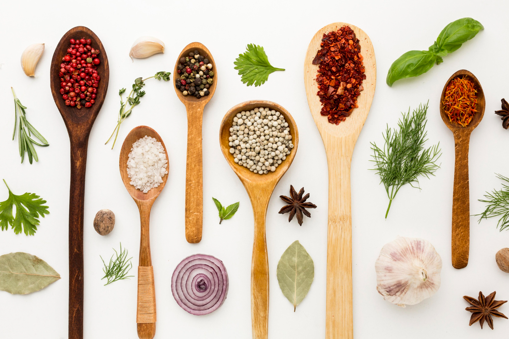

Many home remedies exist that may help treat a variety of things, such as colds, inflammation, and pain.
These are not always supported by research. But, scientists suggest that some may indeed work.
Chances are you've used a home remedy at some point: herbal teas for a cold, essential oils to dull a headache, plant-based supplements for a better night's sleep. Maybe it was your grandma or you read about it online.
The point is you tried it — and perhaps now you're thinking, “Should I try it again?”
It's not clear exactly what makes a home remedy do the trick.
Is it an actual physiological change in the body or more of a placebo effect? Thankfully, in recent decades, scientists have been asking the same questions in a lab, and are finding that some of our plant-based remedies aren't just old wives' tales
Turmeric for pain and inflammation
Who hasn't heard of turmeric by now? Turmeric has been used, primarily in South Asia as a part of Ayurvedic medicine, for almost 4,000 years. When it comes to proven medicinal purposes, the golden spice may be best for treating pain — specifically pain associated with inflammation.
Several studies have found that curcumin is responsible for turmeric's “wow” factor.
In one study, people with arthritis painTrusted Source noted that their pain levels were more reduced after taking 500 milligrams (mg) of curcumin than 50 mg of diclofenac sodium, an anti-inflammatory drug.
Other studiesTrusted Source back up this pain relief claim as well, noting that turmeric extract was as effective as ibuprofen for treating painTrusted Source in patients with knee osteoarthritis.
Don't go grinding turmeric — which stains heavily! — for immediate relief though. The amount of curcumin in turmeric is at most 3 percent, meaning you're better off taking curcumin supplements for relief.
That's not to say a soothing turmeric latte won't help. It's suggested that 2 to 5 grams (g) of the spice may still provide some benefits. Just be sure you add black pepper to boost the absorption.
Drink a cup per day
Turmeric is about the long game. Consuming 1/2 to 1 1/2 tsp.
turmeric per day should start providing noticeable benefits after four to eight weeks.

Ginger for pain and nausea
It's almost law to try ginger when you have a cold, sore throat, or are experiencing morning sickness and nausea. Making a cup is pretty standard: Grate it in your tea for a stronger effect.
But the other benefit of ginger that goes less noticed is its effectiveness as an anti-inflammatory.
The next time you feel a little queasy and have a headache, try ginger. Ginger works differently than other pain relievers that target inflammation. It blocks the formation of certain types of inflammatory compounds and breaks down existing inflammation through an antioxidant that interacts with acidity in the fluid between joints.
Its anti-inflammatory effectsTrusted Source come without the risks of nonsteroidal anti-inflammatory drugs (NSAIDs).
Ginger tea recipe
Grate half an inch of raw ginger.
Boil 2 cups of water and pour over ginger.
Let sit for 5 to 10 minutes.
Add juice from a lemon, and add honey or agave nectar to taste.
Magnesium-rich foods for everything
Feeling muscle pains? Fatigue? More migraine attacks? More likely to slip into a numbed emotional state than usual? It might be a magnesium deficiency.
While magnesium is often talked about in terms of the growth and maintenance of bones, it's also essential in nerve and muscle function.
But studies show that almost half of the U.S.
population doesn't get their required amount of magnesiumTrusted Source.
So, if you've ever complained of these symptoms and got a slightly terse “eat spinach” response in return, know that it's not completely unfounded.
Spinach, almonds, avocados, and even dark chocolate are all rich in magnesium.
You don't necessarily need a supplement to treat magnesium deficiency.
When it comes to mood, magnesium may also help.
Magnesium works with the parasympathetic nervous system, which keeps you calm and relaxed, suggesting that having a magnesium-rich diet might aid in stress relief.
Foods high in magnesium
lentils, beans, chickpeas, and peas
tofu
whole grains
fatty fish, like salmon, mackerel, and halibut
bananas
1.Cold and Flu:
Stay hydrated with water, herbal teas, and broths.
Get plenty of rest to help your body recover.
Use over-the-counter cold and flu medications as directed.
2.Headaches:
Apply a cold compress to your forehead or the back of your neck.
Rest in a dark, quiet room.
Over-the-counter pain relievers like ibuprofen or acetaminophen can help.
3.Sore Throat:
Gargle with warm saltwater.
Drink herbal teas with honey and lemon.
Use throat lozenges or sprays for temporary relief.